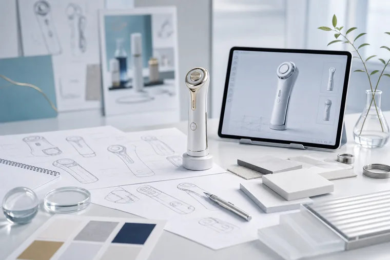
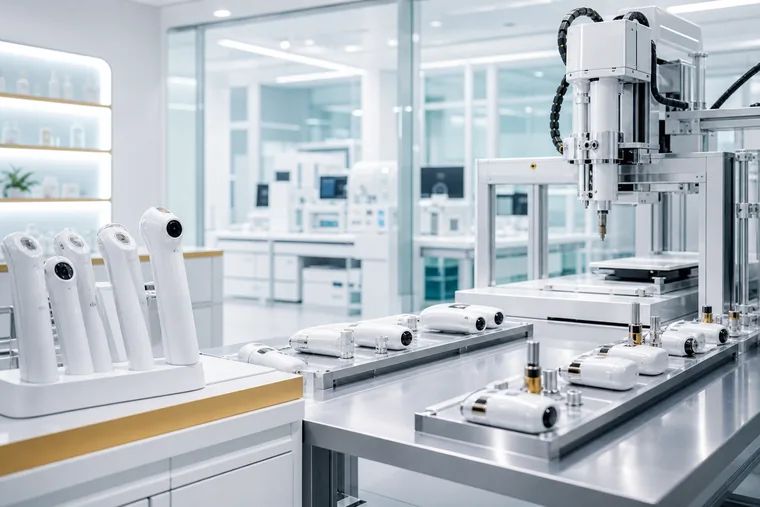
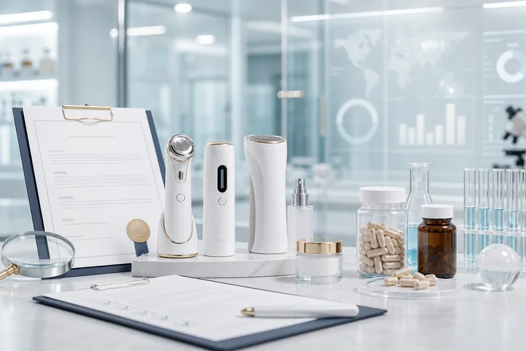

Product Planning
사용 목적과 고객 경험을 기준으로 일상에 어울리는 제품 방향을 설계합니다.
Technology
넥스젠큐어는 미용기기, 헬스케어 디바이스, 미네랄 기반 건강식품 라인업을 다루며 제품의 기능적 가치와 브랜드 신뢰를 함께 설계합니다.


사용 목적과 고객 경험을 기준으로 일상에 어울리는 제품 방향을 설계합니다.

미용기기·마사지기 제조 기반을 중심으로 안정적인 제품 경험을 추구합니다.
물리·화학·생물학 연구개발업의 성격을 브랜드 기술 스토리와 연결합니다.

고객이 안심하고 경험할 수 있도록 제품의 목적과 품질 기준을 꾸준히 다듬습니다.
Productization Process
넥스젠큐어의 기술력은 복잡한 용어보다 고객이 체감할 수 있는 제품 경험과 신뢰를 만드는 데 있습니다.